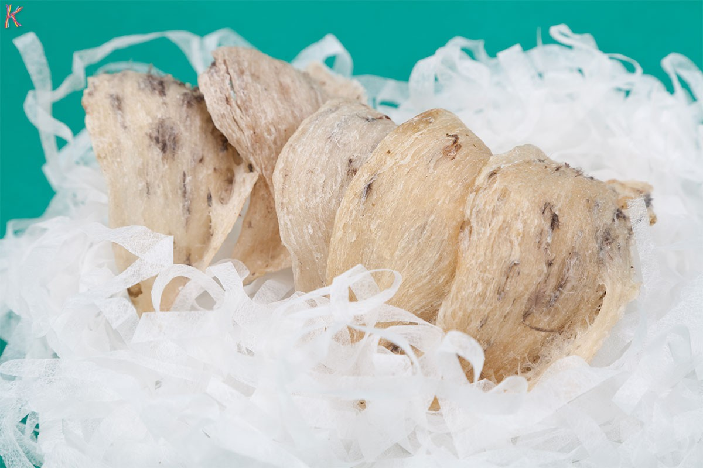

CÁC CÂU HỎI THƯỜNG GẶP VỀ YẾN SÀO¶
13. Có rất nhiều loại yến sào giả, liệu có cách nào phân biệt thật giả không?
19. Chỉ nên ăn tổ yến vào những ngày cảm thấy mệt mỏi phải không?
22. Tổ yến sau khi hấp cách thủy bị tan ra, có phải là tổ yến giả?
1. Yến sào là gì?¶
Yến sào hay còn gọi là tổ yến, chỉ có được tìm thấy trên vách đá, hang động nơi mà loài chim này sinh sống.
Hình dạng của yến sào giống như một chiếc chén trà bổ đôi, được lấy từ nước dãi của loài chim yến trống và chim yến mái. Nước dãi của chim yến bị đông cứng lại sau khi bị tiếp xúc với không khí, đây là chất hữu cơ và ở dạng tự nhiên, dễ hấp thụ.
2. Thành phần của yến sào là gì?¶
Yến sào hay tổ yến có chứa các dưỡng chất dinh dưỡng quý hiếm, chủ yếu là các axit amin và protein. Một trong các axit amin quan trọng là amide, humin, arginine, cystine, histidine và lysin được cho là có khả năng tăng cường hệ miễn dịch, đẩy nhanh tái tạo tế bào và chống lão hóa.
Một thành phần quan trọng khác của yến sào cũng cần phải kể đến đó là các loại khác song chất thiết yếu đối với sự hình thành của cơ thể như: sắt, canxi, phospho, magie…giúp nhanh tái tạo và tham gia vào quá trình hình thành máu mới.
3. Có bao nhiêu loại yến?¶
Tổ yến có 3 loại khác nhau: tổ yến trắng, tổ yến hồng, tổ yến huyết. Tuy nhiên, 3 loại yến này cũng được phân thành hai loại, đó là: tổ yến thiên nhiên ( được khai thác trực tiếp từ vùng đảo yến tự nhiên do các công ty quản lý) và tổ yến nhà ( được nuôi trong các nhà yến). Trong đó, tổ yến thiên nhiên mang lại giá trị cao nhất cả về chất lượng và kinh tế.
4. Phân biệt tổ yến thiên nhiên và tổ yến nhà như thế nào?¶
Tổ yến thiên nhiên: có hình dáng giống cái chén, thân dày và chân cứng, chỉ ăn các thức ăn bằng côn trùng.
Tổ yến nhà: thường màu trắng ngà, thân hơi mỏng, tổ yến chất lượng phụ thuộc theo khu vực có thức ăn nhiều cho chim tìm mồi.
5. Tại sao yến sào lại quý như vậy?¶
Yến sào là món ăn mang lại không ít giá trị dinh dưỡng và tinh thần bởi chúng là một trong số ít các loại thực phẩm có chứa cấu trúc glucoprotein, có năng lượng cao, cơ thể dễ hấp thụ.
Bên cạnh đó, trong yến sào có đến khoảng 31 nguyên tố khoáng đa, vi lượng cùng các nguyên tố quý hiếm giúp ổn định thần kinh trí nhớ, tăng cường hệ tiêu hóa và quá trình trao đổi chất, làm sạch phổi và các cơ quan hô hấp. Hơn thế nữa, yến sào còn có tác dụng làm tăng huyết sắc tố, giảm thời gian đông máu, phục hồi các tế bào bị tổn thương, hồi xuân và tăng cường tuổi thọ.
Trong những năm gần đây, các nhà khoa học còn nghiên cứu thành công tác dụng của yến sào trong việc hỗ trợ điều trị ung thư và bệnh HIV/AIDS do có một số hoạt chất sinh học kích thích sinh trưởng tế bào bạch cầu ngoại biên trong yến sào.
6.Những ai nên dùng yến sào, ai không nên dùng yến sào?¶
Yến sào là thực phẩm thích hợp với nhóm đối tượng sau đây:
Phụ nữ: phụ nữ là doanh nhân, phụ nữ mang thai, tuổi trung niên, nội trợ, nhân viên văn phòng, phụ nữ có nhu cầu làm đẹp da, đẹp dáng…
Nam giới: thích hợp với tất cả đối tượng là nam giới.
Người già: người cao tuổi, người mắc các bệnh về tiểu đường, tim mạch, hô hấp kém, người đang trong giai đoạn sức khỏe suy giảm…
Trẻ em: trẻ em mới sinh, trẻ nhỏ, trẻ tuổi vị thành niên, trẻ cần tăng cường trí nhớ để học tập.
Người bệnh: tất cả những người có nguy cơ nhiễm bệnh.
Đối tượng không nên dùng yến sào:
Yến sào thích hợp với hầu hết các đối tượng người sử dụng, thậm chí là trẻ sơ sinh, phụ nữ có thai và cho con bú vì thực phẩm này không gây tác dụng phụ. Chỉ những người bị dị ứng với protein mới không nên dùng yến sào.
7. Tại sao phụ nữ nên ăn yến khi mang thai?¶
Trong quá trình mang thai, phụ nữ hay bị nghén và có cảm giác mệt mỏi, buồn nôn, ăn yến vừa có tác dụng bổ sung dinh dưỡng cho bé và làm giảm các triệu chứng mệt mỏi trong thời gian mang thai.
Yến không những thích hợp với phụ nữ mang thai mà phụ nữ cho con bú cũng nên dùng yến sào để giúp trẻ tăng cường sức đề kháng và miễn dịch tốt hơn.
8. Ăn yến có sự tăng cân không?¶
Yến là một loại thực phẩm có chứa rất nhiều chất dinh dưỡng quý nhưng lại sở hữu lượng đường tự nhiên không béo nên nếu bạn đang trong quá trình ăn kiêng và cần bổ sung dinh dưỡng thì yến là thực phẩm thông minh nhất đấy.
9. Ăn yến lúc nào là tốt nhất?¶
Theo các chuyên gia dinh dưỡng của Viện dinh dưỡng Việt Nam, thời điểm ăn yến tốt nhất là lúc bụng đói, vào buổi sáng sớm và trước khi đi ngủ để hấp thụ yến tốt nhất.
10. Dùng yến sào sao cho tốt?¶
Yến sào nguyên tổ chủ yếu dùng để nấu các món soups, nấu chè, yến chưng đường phèn…cùng với rất nhiều loại thực phẩm để bổ dưỡng sức khỏe.
Tuy nhiên, để sử dụng yến làm thuốc hay làm các món ăn, người dùng phải ngâm tổ yến trong hai giờ đồng hồ với một lượng nước ấm và phải nhặt bỏ các tạp chất và lông chim. Sau đó, tách những lông tơ còn sót lại và dùng nước ấm rửa nhiều lần cho đến khi sạch mới tiếp tục chế biến thành các món ăn bổ dưỡng khác.
11. Bảo quản tổ yến như thế nào?¶
Muốn bảo quản tổ yến, bạn nên cho vào tủ lạnh ở nhiệt độ 40 độ C và lưu giữ trong khoảng 1 tuần. Nếu muốn lưu giữ lâu hơn, nên bật quạt thổi cho khô rồi đóng vào hộp, tránh ánh nắng trực tiếp.
12. Dùng yến sào thường xuyên có tốt hay không?¶
Nên dùng yến sào thường xuyên và với một lượng đủ dùng để luôn giữ cho cơ thể thật thoải mái và làm giảm stress, phòng ngừa bệnh tật.
Trên thị trường có rất nhiều loại nước uống, liệu những loại nước này có tốt như các loại tổ yến khác không?
Trên thị trường có rất nhiều thương hiệu yến nổi tiếng như: yến sào Khánh Hòa, yến sào Sài Gòn…có chứa các thành phần chính là yến sào, vừa tiện ích vừa mang lại giá trị dinh dưỡng cao cho người sử dụng.
13. Có rất nhiều loại yến sào giả, liệu có cách nào phân biệt thật giả không?¶
Để phân biệt yến sào thật giả, bạn có thể tham khảo một số cách phân biệt dưới đây”
Về mùi vị: yến sào thật có mùi tanh và ẩm mốc. Trong khi đó, yến sào giả rất khó đạt được mùi vị đặc trưng này bởi chúng thường có mùi lạ, hơi hăng hắc.
Ngâm nước: ngâm một ít yến với nước, yến giả sẽ nhão ra còn tổ yến thật không bị tan, sợi yến vẫn còn nguyên vẹn.
Ngâm vào dung dịch i ốt: tổ yến giả sẽ có màu xanh do được làm từ tinh bột. Tổ yến thật dù đem nấu chín vẫn còn nguyên màu xanh.
14. Giá tổ yến như thế nào là hợp lý nhất?¶
Thông thường, giá của tổ yến đảo đắt hơn giá của tổ yến nuôi, tổ yến huyết, tổ yến hồng có giá đắt hơn tổ yến trắng.
Giá tổ yến huyết có khi lên đến vài chục triệu hoặc vài trăm triệu, trong khi đó, tổ yến trắng chỉ có giá vài triệu đồng.
15. Mua tổ yến ở đâu giá cả hợp lý nhất?¶
Phía dưới bài viết có số điện thoại để các Khách Hàng tiện liên lạc, gặp Ms.Minh để được tư vấn thêm.
16. Tại sao yến sào có nhiều màu?¶
Yến sào chứa nhiều khoáng chất như đồng , sắt, kẻm, mangan, kali và natri. Khi những khoáng chất này bị oxi hóa, chúng sẽ thay đổi màu sắc tổ yến.
17. Yến sào nguyên chất được cảm nhận ra sao?¶
Yến sào nguyên chất có màu trắng mờ và tách rời với các tạp chất khi nhìn kỹ bằng mắt thường. Tất cả tổ yến đều có kính thước và hình dạng khác nhau vì vậy nếu có những tổ yến đồng dạng thì đa phần chúng đã qua quá trình xử lý của con người. Ngoài ra, yến sào được đảm bảo đủ khô thì rất giòn, dể vỡ vì thế nếu tổ yến có sự dẻo dai và khó vở thì cũng không phải là yến nguyên chất.
Yến sào nguyên chất có mùi vị gần gần với mùi lòng trắng trứng.
18. Lợi ích cơ bản yến sào mang lại là gì?¶
Từ những báo cáo phân tích hóa học trong yến sào, chúng ta có thể khẳng định chắc chắn các axit amin hòa tan sẽ giúp cải thiện cơ thế và sản sinh tế bào mới. Các chất chống oxy hóa sẽ tiêu diệt các gốc tự do có hại cho tế bào. Yến sào cũng chứa EGF ( yếu tố tăng trưởng biểu bì) giúp chống lão hóa mạnh mẽ. Nhiều thử nghiệm lâm sàng về việc dùng yến sào như là bài thuốc chống ung thư đã được tiến hành.
19. Chỉ nên ăn tổ yến vào những ngày cảm thấy mệt mỏi phải không?¶
Sử dụng tổ yến hàng ngày hoặc cách ngày đều đặn một lượng yến nhỏ thay vì chờ đến lúc cảm thấy mệt mỏi mới ăn một lượng lớn thì không nên. Ăn yến không cần ăn quá nhiều trong một thời gian ngắn mà quan trọng là dùng đều đặn để có tác dụng bồi bổ tốt nhất.
20. Mỗi lần nên sử dụng một lượng tổ yến bao nhiêu là đủ?¶
Khả năng hấp thụ các chất dinh dưỡng vào cơ thể con người là có giới hạn, do đó khi nạp vào quá nhiều thì một phần các chất dinh dưỡng không được hấp thụ hết sẽ bị thải ra khỏi cơ thể qua đường tiêu hóa. Do đó mỗi lần ăn chỉ cần dùng khoảng 3 gram tổ yến cho trẻ nhỏ trên 1 tuổi và 5 gram cho trẻ trên 12 tuổi và người lớn là đủ. Không cần dùng quá nhiều tổ yến trong một lần ăn vì như thế cơ thể sẽ không thể hấp thu hết các thành phần dinh dưỡng trong tổ yến sẽ rất lãng phí.
21. Tại sao chỉ nên hấp cách thủy tổ yến mà không nên nấu?¶
Khi hấp cách thủy, nhiệt độ trong chén đựng tổ yến không thể vượt quá 100 độC, các chất dinh dượng trong yến sào được bảo lưu tốt nhất. Nếu dùng phương pháp nấu trực tiếp thì rất khó điều chỉnh được nhiệt độ, khi đó nhiệt độ quá cao sẽ phá hủy các chất dinh dưỡng tự nhiên trong yến sào.
22. Tổ yến sau khi hấp cách thủy bị tan ra, có phải là tổ yến giả?¶
Thường thời gian hấp cách thủy là 30-45 phút, để nhỏ lửa. Thời gian hấp cách thủy ít hơn sợi yến còn nguyên sợi và hơi dai so với thời gian hấp lâu hơn sợi yến sẽ nở bung hết cỡ và mịn. Nếu chưng quá lâu tổ yến sẽ tan chảy vì tổ yến là một sản phẩm gốc nước được tạo ra trực tiếp từ nước miếng của loài chim yến.
Vì có giá trị cao nên tổ yến thường xuyên bị làm giả với mức độ càng ngày càng tinh vi, để có thể mua được tổ yến chất lượng đảm bảo với giá tốt người tiêu dùng nên chọn mua tổ yến ở những địa chỉ tin cậy.
Note
Liên hệ Ms.Trang - Điện thoại: 0933764566

#trích nguồn từ internet